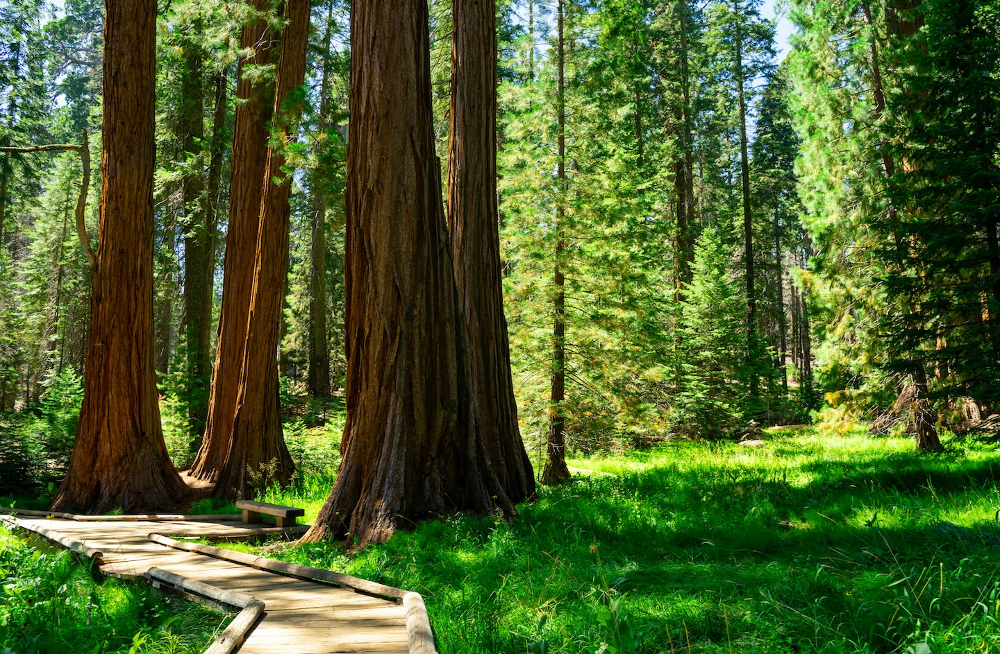
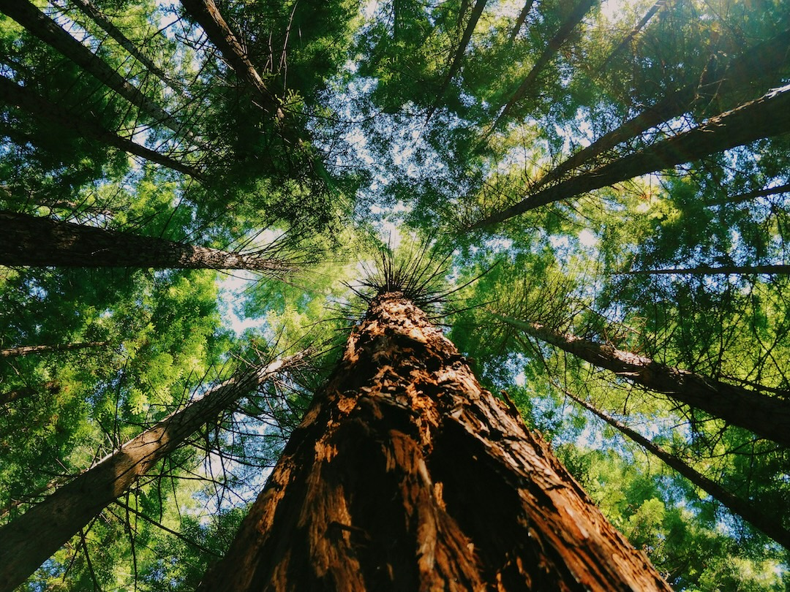

| Feature | Coast Redwood | Giant Sequoia |
|---|---|---|
| Size | Tallest tree on Earth | Biggest tree by volume |
| Habitat | Northern California Coast | Sierra Nevada Mountains |
| Reproduction | Sprouts from seeds, tree "clones" can grow from roots | Cones need to be opened by wildfires |
Information from:
Save the RedWoods League
Wikipedia